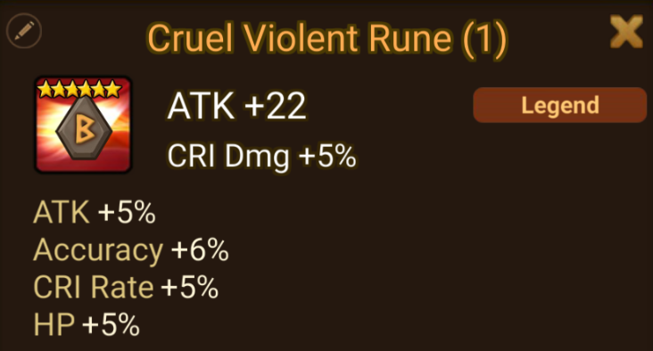
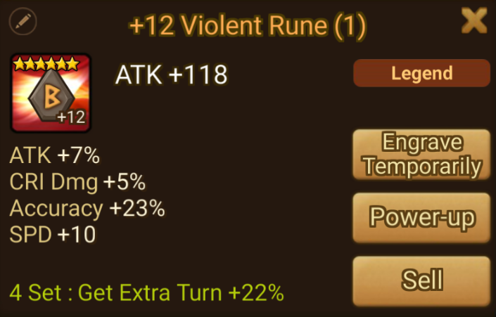
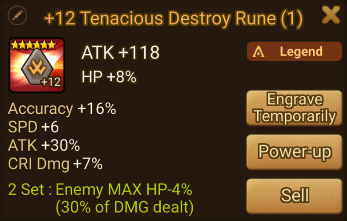
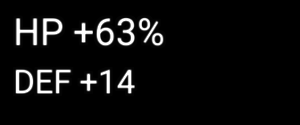
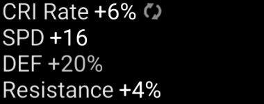
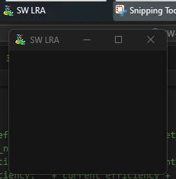

Improving my Golang skills by gaming optimization.
Welcome to my episode 2 (oh, this is a serie now ?) of learning Golang. As I'm still on my Golang learning journey I'm hungry about personnal project where I can practice It. Did I told you about our lord and savior Summoners War ?
Summoners War is a popular mobile game where players take on the role of a summoner with the ability to summon creatures to fight on their behalf. These monsters come in various elemental types and have different roles and abilities in battles.
The gameplay primarily revolves around turn-based battles where players assemble teams of monsters to fight against computer-controlled opponents or other players in player-versus-player modes. Battles are strategic, and success often depends on team composition, rune management, and understanding of elemental advantages and disadvantages.
See old school Final Fantasy ? Pretty much the same if your characters and items obtention was mixed with a casino.
How runes works ?
I will simplify this part to what's revelant for the project. When you start to be advanced in the game, runes you loot have 3 to 5 lines of random caracteristics. Each of these imparts a specific amount of that characteristic to your monster, within a certain range.
The range is contingent on the specific characteristic, and the amount is subject to luck. Now you can discern the direction we're heading in.

A rune can be upgraded up to level 15, and during this process, it receives an additional 3 to 4 boosts in stats. These boosts fall within the same range as the initial ones. This implies that the same rune can either become quite powerful or relatively lackluster depending on the quality of the boosts received during its leveling process.
This is what a bad rune look with my actual standards:

And a good one:

Rune efficiency calculates the percentage of a rune's stats in comparison to those of a perfect rune. As you advance in the game, especially in mid to late stages, acquiring runes with higher efficiency becomes crucial for maximizing your team's potential. In my example, the first rune has an efficiency of approximately 79%, whereas the second one approaches 99%.
Efficiency
The formula to calcul efficiency was theorized years ago by Barion and can be summarized like this:
efficiency = (sum(sub_stat/sub_stat_max)+1)/2.8
As we are aware of the formula, we can calculate each rune's efficiency ourselves, correct? However, the issue lies in the immense effort required to perform this calculation for each individual rune. There are occasions where you may need to sift through approximately a thousand runes, either to enhance your weaker ones or to decide whether to sell a new rune due to it not meeting your current minimum standards.
The community already have gone this path, and a popular tool for this is called "Summoners War Optimizer". Despite it an insanely compleat application with a plethora of features, calculating efficiency is just one of it, and, by design, miss one of my need. Sometimes, all I want is to simply navigate to my inventory, evaluate my runes, and efficiently sift through them for selling or replacement, nothing more, nothing less.
The actual workflow for SWOP is:
- Plug your device to a special proxy, which can extract a json files of your account with many infos in it, including your runes.
- Import that file to the website
- Access to the table where all your runes are listed
- Ranked them by one criteria of another
- For each one I decide to sell, found it in my inventory
This take so many click I can't, I just want to pop a random rune in my inventory, know if it's worth keeping and voila.
Designing the application
After searching for a while I didn't found any app doing that so, I decided to create it myself.
So what it should look like:
- Simple GUI App
- Return rune's efficiency
- Do not break the T.O.S.
- DO NOT BREAK THE T.O.S.
We also need to think about our app workflow:
- Get current rune's values
- Do our calculations
- Return result to user
- Start again on next rune
That's a start. Now let's have fun.
Let's Go
Getting current rune's value
To get text value from the game we have many options, but doing it without breaking the T.O.S. can be touchy. However, capturing video input is OK, as it is needed for example by content creators to stream the game, or create videos.
By screenshooting the game we can use Optical Character Recognition (O.C.R.) on the capture to scan and process it to text. So now, we need to get that capture.
Lurking around I found this gist https://gist.github.com/rgl/284d7a56d839e503fd953c110b9cee13, I started by patching the included flip-trick as directed in the comment and add a crop, to only get the rune's stats.
At this point this is the output:
Now, we need to segment them into blocks of plain text. This will reduce unnecessary clutter and enhance the reliability of future OCR work. Additionally, we should avoid excessive use of colors and visual effects for better readability.
I started by creating a function to simplify the image, adding contrast and converting it to grayscale:
func adjust_brightness(img image.Image) image.Image {
result := adjust.Contrast(img, +0.5)
grayscale := gift.New(gift.Grayscale())
dst := image.NewNRGBA(grayscale.Bounds(result.Bounds()))
grayscale.Draw(dst, result)
return dst
}
Then I created 4 function to split the image into simpler block to process, and grouping them by categories:
- The rune name and current level
- The base stat and if there is one, the static inate.
- All subs which can grow and where most of the effiency reside.
func crop_custom(img image.Image, ratiow float64, ratioh float64, anchor gift.Anchor) image.Image {
width := img.Bounds().Dx()
height := img.Bounds().Dy()
h := gift.New(gift.CropToSize(int(float64(width)*ratiow), int(float64(height)*ratioh), anchor))
resized := image.NewRGBA(h.Bounds(img.Bounds()))
h.Draw(resized, img)
return resized
}
func generate_rune_name(img image.Image) image.Image {
finaldst := crop_custom(img, 0.8803, 0.7778, gift.LeftAnchor)
generated := crop_custom(finaldst, 0.88, 0.2143, gift.TopRightAnchor)
return generated
}
func generate_rune_stats(img image.Image) image.Image {
finaldst := crop_custom(img, 0.8028, 0.5556, gift.TopRightAnchor)
generated := crop_custom(finaldst, 0.5263, 0.5, gift.BottomLeftAnchor)
return generated
}
func generate_rune_subs(img image.Image) image.Image {
finaldst := crop_custom(img, 0.5352, 0.80, gift.LeftAnchor)
generated := crop_custom(finaldst, 1, 0.4167, gift.BottomRightAnchor)
return generated
}
While being a little messy this is the cleaner way I found ATM, each block of text needing multiple crop from differents anchors. At first I used pixel for reference but the result was an app which can only be used with a fixed resolution and screen, which made the reusability by other people too complex and restrictive, switching to % of screen made it far more portable.
Our images now looks like this (another rune for example):
 
At this point it is ready to be processed by O.C.R., for this I choosed Tesseract. Tesseract provide a CLI taking a image in input and returning it's O.C.R. result.
We only need to install it then can use it like this:
func ocr(path string) string {
cmdArgs := []string{path, "stdout", "--psm", "6"}
cmd := exec.Command("C:\\Program Files\\Tesseract-OCR\\tesseract.exe", cmdArgs...)
var out bytes.Buffer
multi := io.MultiWriter(&out)
cmd.Stdout = multi
if err := cmd.Run(); err != nil {
log.Fatalln(err)
}
return out.String()
}
At first I choosed to create tmp files on filesystem before sending them to Tesseract. But soon enough my stingy part wanted to get rid of this and do everything in RAM to save on SSD life time.
For this we need to go a little deeper on Tesseract options, by using stdin arg we can pass the image directly as input instead of the image's path on FS. This is the tricky part, first, exec.Command only support a string array as parameter. I tried to trick it using b64 encoding and stuff but it didn't worked.
This is where StdinPipe came into action. This function returns a pipe connected to the command's stdin when it's started, this time, it worked, kind of... because Tesseract is waiting for a byte array. So first of all, we need to convert our image to it.
func image_to_byte(img image.Image) []byte {
buf := new(bytes.Buffer)
err := png.Encode(buf, img)
if err != nil {
fmt.Println("failed to create buffer", err)
}
img_byte := buf.Bytes()
return img_byte
}
Ok NOW, it works.
func ocrbis(img []byte) string {
cmdArgs := []string{"stdin", "stdout", "--psm", "6"}
cmd := exec.Command("C:\\Program Files\\Tesseract-OCR\\tesseract.exe", cmdArgs...)
cmd.SysProcAttr = &syscall.SysProcAttr{HideWindow: true}
stdin, err := cmd.StdinPipe()
if err != nil {
panic(err)
}
go func() {
defer stdin.Close()
if _, err := stdin.Write(img); err != nil {
panic(err)
}
}()
var out bytes.Buffer
multi := io.MultiWriter(&out)
cmd.Stdout = multi
if err := cmd.Run(); err != nil {
log.Fatalln(err)
}
return out.String()
}
Wrapping them togethers:
func get_text(img image.Image) string {
imgbyte := image_to_byte(img)
return ocrbis(imgbyte)
}
At this stage, we can submit our images to Tesseract, which will then provide us the text version. Before we proceed with efficiency calculations, there are some necessary text processing steps to be taken.
Implementing efficiency formula
First we need to create the list of maximum value a stat can be.
var max_value = map[string]int{
"HPper": 40,
"DEFper": 40,
"ATKper": 40,
"Accuracy": 40,
"CRI Rate": 30,
"CRI Dmg": 35,
"ATK": 100,
"DEF": 100,
"HP": 1875,
"SPD": 30,
"Resistance": 40,
}
Tesseract acting weird sometime we also need to add cleaning and correcting functions. Trimming all spaces, delete some weird added chars, etc.
func trimAllSpace(s string) string {
return strings.Join(strings.Fields(s), " ")
}
func clean_char(to_clean string, char string) string {
regex := regexp.MustCompile(char)
cleaned := regex.ReplaceAllString(to_clean, "")
return cleaned
}
If some text is badly interpreted, we also need to catch it. First, detecting if the stat actually exist:
func stat_exist(stat string) bool {
for value, _ := range max_value {
if stat == value {
return true
}
}
return false
}
Then, if needed, correcting any error in interpreted text:
func correct_stat(stat string) string {
hit := 0
try := 0
if stat_exist(stat) {
return stat
} else {
for value, _ := range max_value {
hit = 0
try = 0
if len(stat) != len(value) {
continue
} else {
for i := 0; i < len(value); i++ {
if value[i] == stat[i] {
hit = hit + 1
try = try + 1
} else {
try = try + 1
}
}
if float64(hit)/float64(try) > 0.66 {
return value
}
}
}
}
return "error"
}
We also split the stats and their value:
func split_stats(rune_subs string) []string {
repercent := regexp.MustCompile("\n")
percent_done := repercent.ReplaceAllString(rune_subs, "|")
cleaned := clean_char(percent_done, "\\)")
cleaned = clean_char(cleaned, "\\(")
cleaned = clean_char(cleaned, "\\(")
cleaned = clean_char(cleaned, "©")
result := strings.Split(cleaned, "|")
return result
}
Wrapping capture, image manipulation, OCR then text manipulation:
func generate_rune() (string, string, string) {
img, _ := capture("Summoners War - MuMu Player")
adjusted__img := adjust_brightness(img)
name := get_text(generate_rune_name(adjusted__img))
stats := get_text(generate_rune_stats(adjusted__img))
subs := get_text(generate_rune_subs(adjusted__img))
return name, stats, subs
}
So, now we have our function that returns the current stat every time it is executed. Next, we will proceed with calculating efficiency.
First, we need to determine the rune level in order to understand how many procs will occur when upgraded to the maximum level. Up to level 3, 4 procs will occur; none after 12. Then, (4 - X) procs will occur for every 3 levels, where X is the modulo 3.
func futur_procs(rune_name string) int {
if strings.Contains(rune_name, "+") {
re := regexp.MustCompile("^\\+[0-9]+")
levelstring := re.FindString(rune_name)
level := clean_char(levelstring, "\\+")
level_int, _ := strconv.Atoi(level)
if level_int >= 12 {
return 0
}
to_proc := fmt.Sprintf("%.0f", (float64(12)-float64(level_int))/3)
to_proci, _ := strconv.Atoi(to_proc)
return to_proci
} else {
return 4
}
}
Now we get the current effectives hits number (and not real hit, the effectives ones being calculated based on efficiency):
func get_hit_number(subs string, stat string) float64 {
splitted := split_stats(subs)
total_hits := float64(0)
for _, v := range splitted {
if !strings.Contains(v, "+") {
continue
}
result := strings.Split(v, "+")
subs := trimAllSpace(result[0])
subs = clean_char(subs, "[0-9]")
value := trimAllSpace(result[1])
if strings.Contains(value, "%") {
if strings.Contains(subs, "HP") || strings.Contains(subs, "ATK") || strings.Contains(subs, "DEF") {
subs = strings.TrimSpace(subs)
subs = subs + "per"
}
value = strings.Replace(value, "%", "", -1)
}
hit_number := get_hit_value(value, subs)
total_hits = total_hits + hit_number
}
if strings.Count(stat, "+") == 2 {
stat = strings.Replace(stat, "©", "", -1)
splitted := split_stats(stat)
result := strings.Split(splitted[1], "+")
subs := trimAllSpace(result[0])
subs = clean_char(subs, "[0-9]")
value := trimAllSpace(result[1])
if strings.Contains(value, "%") {
if strings.Contains(subs, "HP") || strings.Contains(subs, "ATK") || strings.Contains(subs, "DEF") {
subs = strings.TrimSpace(subs)
subs = subs + "per"
}
value = strings.Replace(value, "%", "", -1)
}
hit_inate := get_hit_value(value, subs)
total_hits = total_hits + hit_inate
}
return total_hits
}
Then we compute the efficiency, implementing the formula:
func compute_efficiency(hit_number float64) float64 {
efficiency := ((1 + hit_number) / 2.8) * 100
return efficiency
}
Wrapping them togethers, we generate the rune, then return it's name, stats, subs, current efficiency and calculate potential max efficiency. To do so we take the number of hits waiting to happen then multiply it by 0.2, being the value of each hit in the formula if it happen with max value.
func get_efficiency() (string, string, string, string, string) {
rune_name, rune_stats, rune_subs := generate_rune()
to_proc := futur_procs(rune_name)
current_efficiency := fmt.Sprintf("%.2f", compute_efficiency(get_hit_number(rune_subs, rune_stats)))
potentiel_efficiency := fmt.Sprintf("%.2f", compute_efficiency(get_hit_number(rune_subs, rune_stats)+(float64(to_proc)*0.2)))
return clean_char(rune_name, "\n"), rune_stats, rune_subs, current_efficiency, potentiel_efficiency
}
We also compute the tier equivalent of the efficiency, based on maximal potential procs:
func get_tier(efficiency string) (string, color.RGBA) {
score, _ := strconv.ParseFloat(efficiency, 64)
switch {
case score < 85.7142857:
return "Rare", color.RGBA{R: 67, G: 214, B: 215, A: 220}
case score > 85.7142857 && score < 92.8571429:
return "Hero", color.RGBA{R: 193, G: 17, B: 140, A: 220}
case score > 92.8571429:
return "Legend", color.RGBA{R: 187, G: 75, B: 28, A: 220}
default:
return "error", color.RGBA{0, 0, 0, 1}
}
}
Spoiler: you can see colors here, because the next step is to do the GUI.
Leaving the terminal
Terminal is cool, but compiling on fly the code to run it manually each time you select a new rune is still too much for me. I wanted a GUI auto refreshing the current rune values.
Here come Fyne, a cross platform GUI toolkit for Go.
With Fyne, creating a window is as simple as:
os.Setenv("FYNE_SCALE", "1")
a := app.New()
a.Settings().SetTheme(theme.DarkTheme())
w := a.NewWindow("SW LRA")
logo, _ := fyne.LoadResourceFromPath("./logo.png")
w.SetIcon(logo)
w.Resize(fyne.NewSize(225, 175))
w.ShowAndRun()

Then we want to add elements, using Fyne you can split the window using containers. This containers are used to organize a list of elements put into thems.
Creation a vertical container, each element will be verticaly aligned. So we create one, then put the layout of our app in it:
custom_container := container.NewVBox()
start_button := widget.NewButton("Start scan", func() {})
start_button := widget.NewButton("Stop scan", func() {})
customize_container(custom_container, []fyne.CanvasObject{layout.NewSpacer(), start_button})
I created the customize_container() function clean and add an array of item to a container:
func customize_container(target_container *fyne.Container, items []fyne.CanvasObject) {
target_container.RemoveAll()
target_container.Objects = items
target_container.Refresh()
}
Then we set our window content to be this container before refreshing window's content.
w.SetContent(custom_container)
w.Content().Refresh()
At this time, the window is generated, this only a Start scan button, we now need to add our features. First, the text placeholders.
func gen_txt(content string, color color.Color, style fyne.TextStyle, size float32) *canvas.Text {
newtxt := canvas.NewText(content, color)
newtxt.Alignment = fyne.TextAlignCenter
newtxt.TextStyle = style
newtxt.TextSize = size
return newtxt
}
rune_name_txt := gen_txt("Rune Name", color.White, fyne.TextStyle{Bold: true}, 14)
rune_eff_txt := gen_txt("Rune Eff", white, fyne.TextStyle{Bold: false}, 14)
rune_tier_txt := gen_txt("Rune Tier", white, fyne.TextStyle{Bold: false}, 14)
rune_maxeff_txt := gen_txt("Rune Max Eff", white, fyne.TextStyle{Bold: false}, 14)
rune_maxtier_txt := gen_txt("Rune Max Tier", white, fyne.TextStyle{Bold: false}, 14)
Then, the start & stop buttons:
stop_button := widget.NewButtonWithIcon("Stop Scan", theme.ContentClearIcon(), func() {
scan = false
customize_container(custom_container, []fyne.CanvasObject{layout.NewSpacer(), start_button})
w.Content().Refresh()
})
start_button = widget.NewButtonWithIcon("Start Scan", theme.NavigateNextIcon(), func() {
scan = true
customize_container(custom_container, []fyne.CanvasObject{rune_name_txt, rune_eff_txt, rune_tier_txt, rune_maxeff_txt, rune_maxtier_txt, layout.NewSpacer(), stop_button})
w.Content().Refresh()
inf_run := func() {
for scan {
rune_name, _, _, current_efficiency, max_efficiency := get_efficiency()
rune_name_txt.Text = rune_name
rune_tier_txt.Text, rune_tier_txt.Color = get_tier(current_efficiency)
rune_eff_txt.Text = "Efficiency: " + current_efficiency + "%"
rune_tier_txt.Text = "Tier: " + rune_tier_txt.Text
if max_efficiency == current_efficiency {
rune_maxeff_txt.Text = " "
rune_maxtier_txt.Text = " "
} else {
rune_eff_txt.Text = "Current " + rune_eff_txt.Text
rune_tier_txt.Text = "Current " + rune_tier_txt.Text
rune_maxeff_txt.Text = "Potential Efficiency: " + max_efficiency + "%"
rune_maxtier_txt.Text, rune_maxtier_txt.Color = get_tier(max_efficiency)
rune_maxtier_txt.Text = "Potential Tier: " + rune_maxtier_txt.Text
}
custom_container.Refresh()
w.Content().Refresh()
time.Sleep(time.Millisecond * 100)
}
}
go inf_run()
})
The stop button only do one thing when pressed: stop the current scan and show the start button where all our work live.
The start button, when pressed, set the window's container with our placeholders which will be feed later with our rune infos. Then we declare a scan function which will call our OCR and efficiency functions to actually generated thoses values.
Finally, it refresh the window to show them to the user. This function is called a go routine and allow us to run it in background, without it, when the stop button is pressed the action would have been queued to be run... after the, currently, infinite function.
For a better user experience it would be great to have our application's window other the game. To reach this we can use window's "always on top" feature. Implementation is done by calling user32.dll, a core windows dll containing Windows's API functions related to the Windows user interface.
func GetWindowHandleByWindowName(window_name string) uintptr {
user32dll := windows.MustLoadDLL("user32.dll")
enumwindows := user32dll.MustFindProc("EnumWindows")
var the_handle uintptr
window_byte_name := []byte(window_name)
// Windows will loop over this function for each window.
wndenumproc_function := syscall.NewCallback(func(hwnd uintptr, lparam uintptr) uintptr {
// Allocate 100 characters so that it has something to write to.
var filename_data [100]uint16
max_chars := uintptr(100)
getwindowtextw := user32dll.MustFindProc("GetWindowTextW")
getwindowtextw.Call(hwnd, uintptr(unsafe.Pointer(&filename_data)), max_chars)
// If there's a match, save the value and return 0 to stop the iteration.
if strings.Contains(string(windows.UTF16ToString([]uint16(filename_data[:]))), string(window_byte_name)) {
the_handle = hwnd
return 0
}
return 1
})
// Call the above looping function.
enumwindows.Call(wndenumproc_function, uintptr(0))
return the_handle
}
const SWP_NOSIZE = uintptr(0x0001)
const SWP_NOMOVE = uintptr(0x0002)
func IntToUintptr(value int) uintptr {
return uintptr(value)
}
func setontop(windows_name string) {
time.Sleep(time.Millisecond * 100)
SetWindowAlwaysOnTop(GetWindowHandleByWindowName(windows_name))
}
func SetWindowAlwaysOnTop(hwnd uintptr) {
user32dll := windows.MustLoadDLL("user32.dll")
setwindowpos := user32dll.MustFindProc("SetWindowPos")
setwindowpos.Call(hwnd, IntToUintptr(-1), 0, 0, 100, 100, SWP_NOSIZE|SWP_NOMOVE)
}
The only curious thing here is the need of delay before setting the window on top, my guess is the code run too fast and without it our app window's isn't ready yet to be targetted by Windows.
Now we have everything needed, we can test it:
And voilà. All the source code is available on my github.